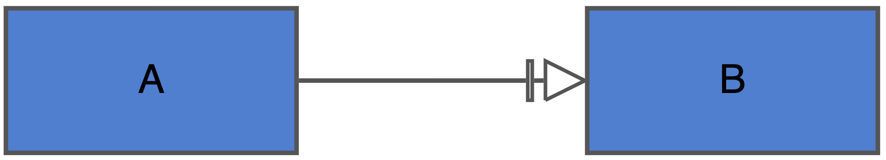

Algebraic Rules
05_algebraicrules.RmdDefault algorithmic rule set
There are several ‘components’ that can contribute to the building of an equation. These components must be considered in a particular order to build a correct equation. See Table 3 for the different components that can contribute and the order in which they are considered when building an equation. Equations do not necessarily need to include every one of these components. An example of how incoming edge information can be used to generate a difference equation can be seen in Figure 1.
| Order of consideration | Equation building block | Representation in equation |
|---|---|---|
| 1 | Stimulant | As an average of the summed stimulants |
| 2 | Inhibitor | 2 divided by the sum of one and the average of the inhibitors |
| 3 | Necessary stimulant | Multiplication against above influences |
| 4 | Modifier | Multiplication against above influences |
| SBGN-AF syntax | Algorithmic rule |
|---|---|
 |
|
 |
|
|  | |
Modifications to the functional forms of necessary stimulants
The influence of a necessary stimulant is defined by the user, which
is applied as some function of the necessary stimulant
(f(necStim)). The default function is simply linear. In
this case, a necessary stimulant will behave in the same was as a
modifier. Users can choose to instead use a form that is either
step-like, or based on Michaelis-Menten dynamics.

Figure 1. A depiction on how different forms for necessary stimulants can effect their downstream impact.
Note that in all cases, when the value of the necessary stimulant is 1, the chosen form has no effect.